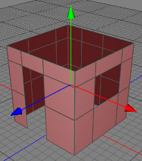
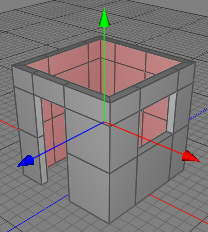

Shell Tool
The shell tool is the tool of choice if you want to make walls for a house or if you want to create a solid object out of a plain surface. The images below demonstrate how a simple polygon structure was turned into a realistic wall structure quickly and easily using the Shell Tool.
 
Modes
The shell tool can only be applied to raw polygon objects. It's only available in polygon mode.

To use the shell tool, select some polygons of a raw polygon object. Then choose the shell tool and drag the mouse in the 3D view either to the left or right, depending on whether you want to perform a negative or a positive shell. Once you are finished release the mouse button.
Keys
- none
Properties
- Inside: This property decides if the shell is moved along the normal direction (outside) or against the normal direction (inside).
- Angle: Determines which polygon neighbors of a polygon selection belong to a shell. Bigger values allow more polygons too be grouped too a shell.
- Quantize: Set this property to 0 if you want to adjust continuously, otherwise this value determines the distance you want to quantize the shell to.